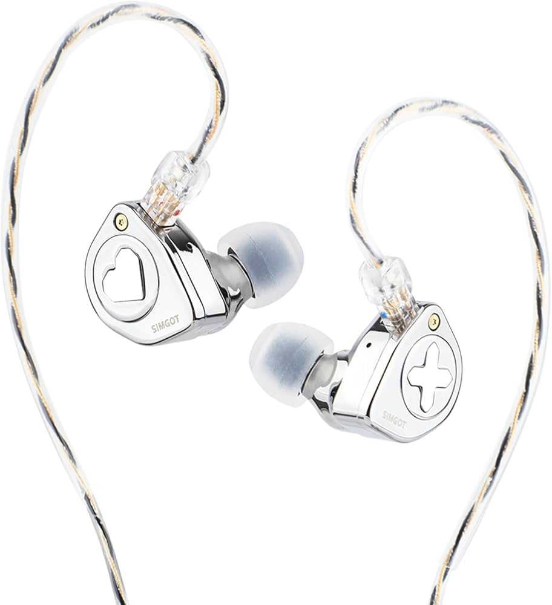

Reviews, Comparisons and Tuning Guides for Audiophiles

My Picks
The sets I personally use and recommend after hundreds of hours of listening. Each one has downloadable AutoEQ presets.
In-Depth
Honest, detailed breakdowns with real-world comparisons. Community-sourced impressions from Reddit and Head-Fi.
The $80 tribrid that has no business sounding this good.
The EW300 packs a unique DD + Planar + Piezoelectric tribrid setup into a CNC-machined mirror-polished metal shell that looks and feels three times its price. The 10mm ceramic composite dynamic driver handles bass and mids with a dual-chamber design, the 6mm planar magnetic driver extends the treble beautifully, and the PZT ceramic driver adds ultra-high frequency air beyond 20kHz.
Gold vs Silver Nozzle: The EW300 ships with two interchangeable nozzles that genuinely change the sound signature. The silver nozzle (red O-ring) delivers a neutral-warm, mildly V-shaped response — brighter, more detailed, better clarity. Most users prefer this for music. The gold nozzle (purple O-ring) is warmer and bass-forward with smoother treble — great for gaming and treble-sensitive listeners. The tuning flexibility means you essentially get two IEMs in one.
Community consensus on Reddit: "Punchy bass without bleed, lively female vocals, wide staging for the price." Some note the 5–6kHz region can be slightly hot at high volumes. The included silver-plated OFC cable with transparent coating is functional but basic — no balanced option in the box.
The $20 no-brainer that punches way above its weight.
The Chu II took everything people loved about the original Moondrop Chu and fixed its biggest flaw: the cable is now detachable (0.78mm 2-pin). The zinc alloy build feels like a $50 IEM — solid, compact, and remarkably comfortable. The brass CNC nozzle adds a touch of gold contrast that looks great, though it can oxidize in humid climates.
Sound-wise, this is a major shift from the original's bright-neutral tuning to a warm V-shaped signature. Bass is significantly enhanced — full-bodied and punchy with controlled sub-bass extension. Mids are natural and vibrant but slightly recessed. Treble is crisp and detailed, though the 3–4kHz Harman-style boost can fatigue some listeners over long sessions.
Reddit consensus: "If you're spending under $25, just buy this. Don't overthink it." Multiple users say they'd happily pay double. The main criticism: occasional QC issues with nozzle alignment and the stock cable feeling cheaper than the original Chu's.
The vocal specialist that makes $20 sound like $60.
Tangzu nails the midrange with the Wan'er SG 2. The UV-coated German resin shells are lightweight, ergonomic, and feature delicate Chinese cloud motifs on the faceplates. Available in transparent white, mysterious black, and special editions (Red Lion, Jade Dragon). The included Tang Sancai eartips are legendary — people buy this IEM just for the tips.
Sound signature is warm, smooth, and fatigue-free. Mids are the star — lush, forward, and natural. Female vocals are outstanding. Bass is mild but well-controlled, providing warmth without muddiness. Treble is intentionally "safe" — smooth and non-sibilant, but some will want more sparkle. The SG 2 adds slightly more treble energy than the original, which is polarizing — some find it fatiguing.
Reddit says: "The Wan'er is the 'safe' recommendation for a reason." Best suited for pop, acoustic, Bollywood, and vocal-centric music. Not ideal for EDM or basshead needs.
Stabilized wood meets warm musicality — a work of art you can listen to.
The Pula Unicrown (technically "Unicrom") turns heads before you even press play. Each pair features unique stabilized maple wood faceplates with a high-gloss finish — no two units look the same. The resin shells are lightweight (6.6g) and ergonomic, disappearing in the ear. The accessory game is strong: a premium modular cable with swappable 3.5mm and 4.4mm terminations, plus a magnetic leatherette carrying case.
Sound is warm V-shaped — musical and engaging rather than analytical. Bass is punchy and textured with satisfying mid-bass impact, though not earthquake-level sub-bass rumble. Mids are clear with sweet female vocals. Treble is energetic but non-fatiguing, though it lacks the upper-treble air you'd get from more analytical sets. The 6kHz dip prevents harshness.
Reddit consensus: "Not a giant killer, but a reliable, enjoyable daily driver with the best unboxing experience at this price." Pairs great with a Qudelix 5K or any decent source.
Optimize
Get the most out of your IEMs with curated EQ presets, eartip pairings, and source recommendations.
Target: Harman IE 2019 v2
Target: Harman IE 2019 v2
Silicone Tips
Swivel-core design for a deeper fit. Opens up the soundstage slightly and improves seal. Best for EW300 and Unicrown.
Silicone Tips (included with Wan'er)
Included with Tangzu Wan'er SG 2. Legendary budget tips with excellent seal, comfort, and neutral sound. Work great on all 4 IEMs here.
TPE Gel Tips
Thermoplastic elastomer that conforms to your ear canal. Unmatched comfort for all-day sessions. Won't color the sound signature.
Memory Foam
Maximum noise isolation with a warm, bass-forward shift. Tames treble peaks on the EW300. Ideal for commuting.
Wired DAC
The $9 legend. Measures flat, low output impedance. Drives all 4 IEMs here cleanly. If it works, don't overthink it. Pairs perfectly with Chu II and Wan'er.
Bluetooth DAC / Amp
10-band parametric EQ, LDAC support, balanced 2.5mm output. Essential for applying the AutoEQ presets wirelessly. Scales the EW300 and Unicrown beautifully.
USB DAC / Amp
Desktop-class performance in dongle form. Dual ESS9069Q, 4.4mm balanced output. Use with the Unicrown's modular cable for the best experience.
Simgot EW300 Silver (dark) vs Moondrop Chu II (blue) vs Tangzu Wan'er SG 2 (green) — compensated to IEF Neutral.
About
IEM Atlas started as a personal spreadsheet tracking every IEM I'd ever tried. It grew into reviews shared with friends, then guides, then this site. Every review is based on extensive listening across multiple genres and sources. No paid placements. No affiliate pressure. Just honest impressions from someone who genuinely loves this hobby.
Favorite IEMs
Hours Listened
Sponsored Reviews
Current Daily
EW300
Gold Nozzle
EQ Apps
Wavelet (Android)
Peace (Windows)
lol (iOS)